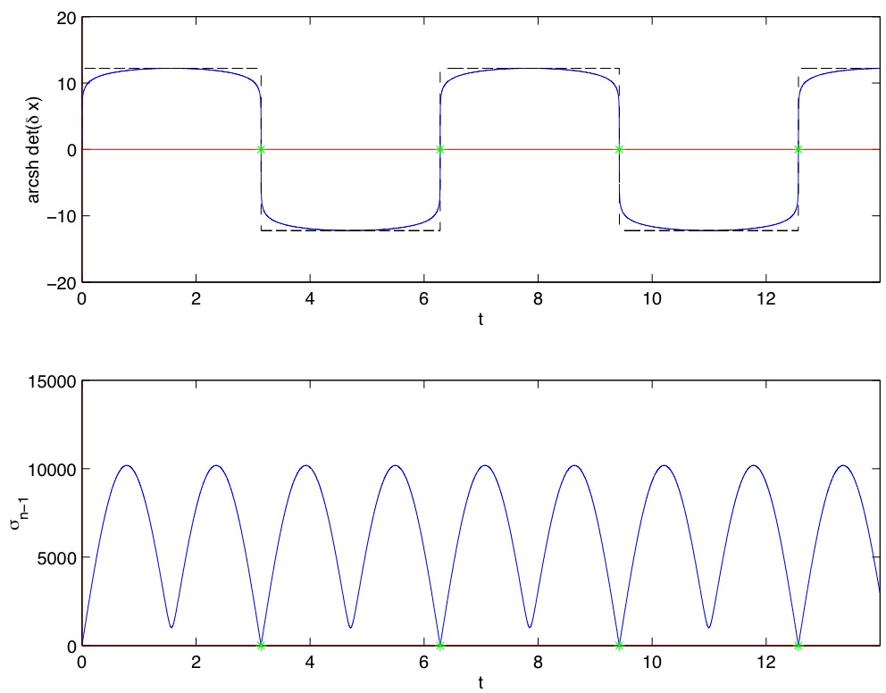

Description
cotcot is a Matlab package designed to compute extremals in
the case of smooth Hamiltonian systems, and to obtain the associated
conjugate points with respect to the performance index of the
underlying optimal control problem.
References
[1]
Second order optimality
conditions in the smooth case and applications in optimal control
Bernard Bonnard, Jean-Baptiste Caillau and Emmanuel Trélat
ESAIM Control Optim. and Calc. Var.,
Vol. 13:2, pp. 207-236, 2007.
[2]
Geometric optimal control of elliptic Keplerian orbits
Bernard Bonnard, Jean-Baptiste Caillau and Emmanuel Trélat
Discrete Contin. Dyn. Syst. Ser. B,
Vol. 5:4, pp. 929-956, 2005
[3]
Computation of conjugate times in smooth optimal control: the COTCOT algorithm
Bernard Bonnard, Jean-Baptiste Caillau and Emmanuel Trélat
Proceedings of the 44th IEEE Conference on Decision and
Control and European Control Conference ECC 2005, pp. 929-933,
Seville, December 2005
[4]
Riemannian metric of the averaged energy minimization problem in orbital transfer with low thrust
Bernard Bonnard and Jean-Baptiste Caillau
Ann. Inst. H. Poincaré Anal. Non Linéaire,
Vol. 24:3, pp. 395-411, 2007.
Reproducible research
"An article about computational science in a scientific publication
is not the scholarship itself, it is merely advertising of the
scholarship. The actual scholarship is the complete software development
environment and the complete set of instructions which generated the
figures." J. Buckheit and D. Donoho (Stanford Univ.)
[1] Figures 6 and 7
code.
[2] Figures 1 and 2
code.
[3] Figure 1, see [2] Figure 1.
[4] Figures 3, 4a-4d, 5 and 6a-6b
code.
Download
cotcot package
(Fortran 77, Adifor and Matlab 4 or higher required).
Link to Adifor at Rice.
See also
Hampath which extends cotcot by
adding a differential homotopy layer.
Last modified: Fri 26 Nov 2009 14:41:56 CET